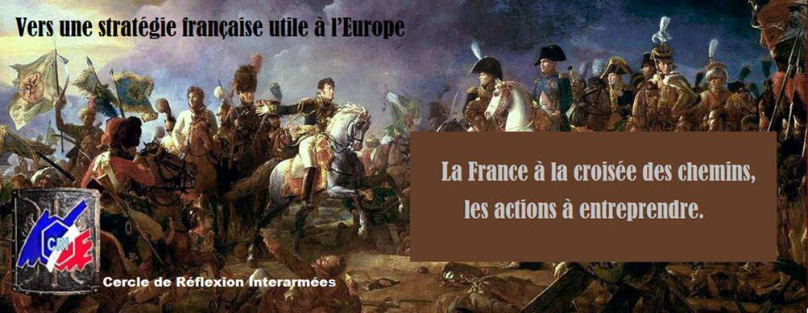
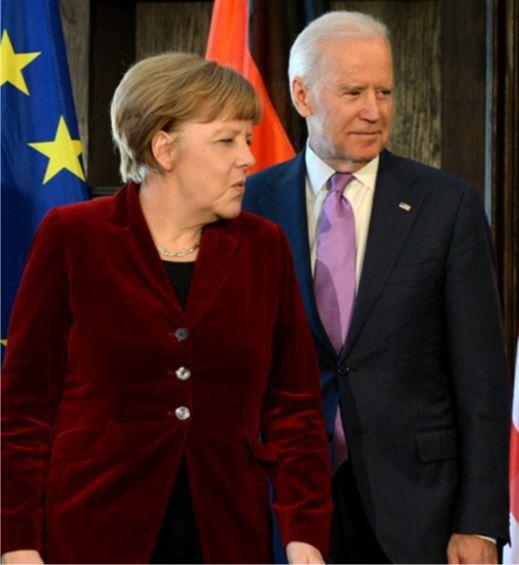
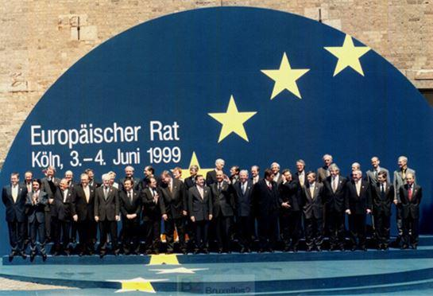
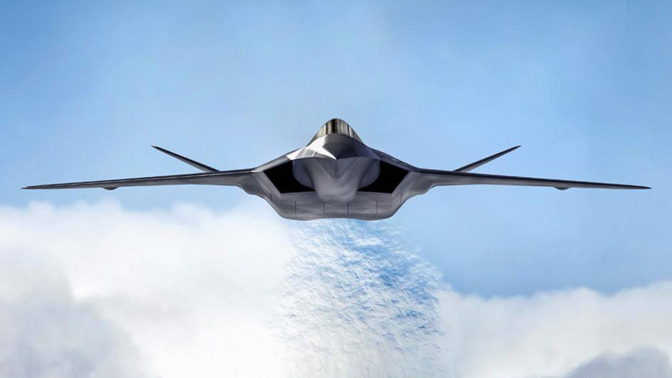

La France à la croisée des chemins, les actions à entreprendre
par Cercle de Réflexion Interarmées

À l’issue des constats précédents, un concept de défense pour la France apparaît nettement. Il pourrait peut-être inspirer une Europe future et totalement réformée.
Un besoin de courage, préalable à toute action
Les ennemis qu’on veut imposer à la France ne sont pas les siens.
La façon actuelle de penser sa politique internationale n’est pas conforme à sa nature. Les règles européennes qu’elle a acceptées jusqu’à présent entravent ses capacités. Elle n’inspire plus une organisation dont pourtant elle est à l’origine ; elle la subit. Dans le cadre étroit des alliances et des sujétions qu’elle a acceptées, elle perd sa souveraineté et ce qui a fait sa spécificité, sa grandeur et son influence.
Elle n’a rien à attendre d’une Union Européenne vassalisée aux États-Unis et, à l’intérieur de cette organisation, elle ne peut se fier totalement, actuellement, à l’Allemagne qui, grâce à sa proximité politique et militaire avec Washington, poursuit, avec constance, la consolidation de sa place de leader européen. À moins d’agir délibérément ou de faire preuve d’un total aveuglement, il n’y a rien à espérer de ce côté pour l’instant.
Elle ne garantit pas, non plus, nos frontières face au danger considérable de l’invasion migratoire tiers mondiale et musulmane, dont on peut se demander si elle en est consciente. Elle n’a pas assuré la paix sur le continent. De nombreux conflits se trament à sa périphérie et la démocratie, davantage que les traités, est à l’origine de rapports pacifiés entre ses membres.
Quant aux aspects financiers, ils servent les intérêts de l’Allemagne qui a tiré profit de l’euro, succédané (ersatz?) du Mark. N’oublions pas que la BCE se trouve à Francfort et que seule la Cour fédérale peut se permettre de lui enjoindre d’appliquer certaines règles…
La France, si elle veut rester elle-même, doit modifier radicalement son attitude.
Comme l’écrit Hubert Védrine dans son essai «Et après?» (Editions Fayard juin 2020, page 131) «Finalement, c’est d’abord et avant tout à la France de se reprendre en main, de reprendre le contrôle de son destin, en prenant les décisions adéquates, en s’y tenant assez longtemps, quels que soient les aléas électoraux, pour qu’elles donnent des résultats. Bien sûr, il s’agit toujours d’exercer une influence dans le monde, d’y défendre nos intérêts et nos idées, de convaincre en Europe, mais, dans la situation actuelle, c’est par la France que cela commence.»
Il n’est pas question de rejeter les amitiés. Le monde occidental partage des valeurs qui méritent d’être promues et défendues. En revanche notre pays doit recouvrer l’essentiel de sa souveraineté et de sa liberté d’action afin de mettre en œuvre une géopolitique favorable à ses intérêts. Elle pourra, de cette manière, influencer ses voisins et atténuer les options extrêmes de quelques-uns de ses amis, tant il est vrai que la puissance exprimée est le seul véritable moyen de se faire écouter et suivre.
En conséquence attitude vis-à-vis de l’OTAN
Notre pays vis à vis de l’OTAN peut suivre deux orientations.
Après le constat effectué, la logique serait de quitter l’organisation militaire de l’Alliance atlantique. La France l’a déjà fait en 1966, sous l’autorité du général de Gaulle, ce qui lui a permis de développer une stratégie propre et les outils de haute qualité indispensables à son accompagnement. Ce choix éviterait à la France d’être associée aux dérives irresponsables des États-Unis et libérerait sa parole.
Un rapprochement avec la Russie, gage d’une paix durable sur le continent européen, en serait facilité. Ce pays n’aurait plus de raison véritable à une conjonction avec la Chine. La situation serait sans doute propice à une modification de l’attitude de l’OTAN, des États-Unis et de toute la géopolitique mondiale.
À cette condition la France justifierait la création d’une alliance européenne qui pourrait s’associer avec les États nord-américains et d’autres États sous un sigle revu. La France retrouverait son statut de puissance indépendante.
Il nous faut, cependant, rester conscient que les obligations actuelles – politiques d’intégration, partage des responsabilités dans l’OTAN – sont des entraves à une autonomisation complète.
Aussi s’en libérer nécessitera du temps, de la souplesse et de l’argent.
En attendant, la France peut aussi tenter de faire évoluer l’OTAN de l’intérieur, même si la perspective est ardue au regard de l’ensemble du constat fait précédemment.
En effet, pour la majorité des pays de l'Union Européenne, l'OTAN continue, par sa capacité d'intimidation, à assurer un rôle pacificateur dans l'espace continental. En agissant ainsi, ils se soumettent aux États-Unis dont l’approche est pour le moins dominatrice. C'est à un rééquilibrage stratégique entre les deux rives de l'Atlantique qu'il faut tenter de procéder.
Il est toutefois possible que la France se démarque des décisions les plus contestables de l’OTAN et en annonce les raisons.
Cette démarche française s’ajoutant au problème posé par la présence, au sein de l’Alliance, d’une Turquie erratique, voire agressive envers ses autres membres, pourrait inciter plusieurs pays membres à envisager, puis demander une évolution de l’Organisation.
Actions vis à vis de l’UE
Mais auparavant, la France devra faire évoluer l’Union Européenne; œuvre de longue haleine, pour laquelle elle pourrait trouver des relais auprès de quelques États, peut être les plus petits, peu préoccupés par une position de meneur dans les relations internationales, et pour lesquels, en ces temps de doute sur l’engagement américain au profit de l’Europe, sauf à vouloir y relancer un conflit , la capacité militaire et la dissuasion française seraient attractives. Il pourrait s’agir des pays baltes, ou de nos voisins belges, les seuls à nous suivre à Barkhane… C’est par ces petits pas que l’idée d’un pôle européen de l’OTAN pourrait véritablement être défendue et progresser.
Nous sentons bien que l’évolution sécuritaire et son renforcement exigent de revoir fondamentalement l’organisation européenne et de construire des relations d’État à État ou de groupes d’États à État ; comme le rappelaient et le recommandaient le Rapport Hamel de 1967 et le Conseil de Cologne de 1999.
Il est impératif de revenir sur tous les abandons de souveraineté, sources de danger.
Cette nouvelle politique devrait encourager des coopérations industrielles et financières équitables, en restaurant, au préalable, des protections aux limites des pays participants. Elle devrait permettre à chacun des États d’assurer la sauvegarde de son propre tissu économique. Dans ces conditions seulement, la France recouvrera une influence qui l’amènera à proposer, avec confiance, des coopérations d’ordre militaire à des voisins et partenaires.
Il est bien certain qu’il s’agit là de modifications fondamentales concernant, non seulement l’UE et la France, mais aussi les relations mondiales. L’affaire est donc considérable.
Le rôle de la France doit s’établir dans une voie différente sans aucune hostilité à l’égard de quiconque, mais en œuvrant avec fermeté pour la promotion de ses intérêts, de ses idées et de la paix.
Aujourd’hui la première menace à laquelle la France doit faire face n’est sûrement pas russe, mais islamique.
Sans oublier un risque majeur et « classique » qui pourrait surgir, ni la menace interne qui se propage sous le prétexte des droits de l’homme et des minorités , la France doit axer sa défense sur la lutte contre cette idéologie religieuse radicale. Elle doit s’y préparer sur son sol et dans les pays qui lui sont proches. Il n’est pas inutile de rappeler que nos voisins subissent, eux aussi, cette menace…
Cette révolution, au sens étymologique de retour au point de départ, devra balayer les errements de quelques dizaines d’années. Ils nous ont conduits à une impasse qui pourrait provoquer une révolution, au sens, cette fois, de bouleversement fondamental. Simultanément il sera bon de concentrer les efforts des Français sur eux-mêmes et de proposer à nos voisins des formes de coopération respectueuse des souverainetés et des cultures.
La crise du Covid-19 qui a fortement secoué les habitudes et dérives mondialistes et mis en exergue l’existence immuable des nations, peut aider à cette refondation.
En effet, face au danger, le refuge sécuritaire a été immédiatement la nation. Chacun a pu constater les graves conséquences des abandons de souveraineté, non seulement dans le domaine des industries de santé, mais, par déduction, dans l’ensemble des besoins régaliens.
Une des pires des conséquences de cette mondialisation pourrait se trouver dans la perte de la souveraineté alimentaire et médicale.
Il serait criminel que les dirigeants persistent dans une mondialisation outrancière en occultant l’évidence des faits.
Les premiers pas à faire: repenser la souveraineté
Il est vraisemblable qu’il faille, objectivement, faire le bilan des accords de Schengen, Maastricht et Lisbonne et réfléchir à de nouvelles formes de rapprochement entre les États européens. Elles devront ménager les équilibres entre les nations et respecter les caractères propres à chacune, tout en obtenant l’approbation des peuples. Elles devront donc s’appuyer sur des conjonctions d’intérêts réels sans jamais imposer des contraintes susceptibles d’éveiller des hostilités.
Il est certain que la sécurité et la Défense pourront alors être regardées comme porteuses de solidarités intra-européennes et que la relation avec les États-Unis et l’OTAN pourra être pensée selon un nouveau rapport.
Le monde d’aujourd’hui est fait d’interdépendances. Elles peuvent être le stimulateur de solidarités, mais ne doivent, en aucune façon, devenir des prétextes à subordinations à un État ou à des systèmes inévitablement sensibles aux pressions du plus fort. Pour cette raison elles doivent prendre la nature de partenariats.
Nous ne devons pas négliger quelques signes porteurs d’espoir. Les actions dans ce sens devront être encouragées.
Les coopérations
Ainsi, il ne faut pas minorer des coopérations qui ont été mises en place, certes prudemment, mais avec de réels succès. Elles peuvent entretenir l’espoir de la renaissance d’une volonté européenne d’autonomie stratégique. Nous y trouvons des organismes sans liens apparents, comme la Brigade franco-allemande, le Corps Européen, l’EUROMARFOR, des programmes d'équipements communs comme Hélios, l’hélicoptère Tigre, le programme Horizon, l’A400M, le Commandement européen du transport militaire, l’Escadron franco-allemand de C130 J à Evreux, l’Agence Spatiale Européenne, le centre d’exploitation d'images satellitaires…ou encore le partage de laboratoires du CEA- applications militaires- au profit de nos dissuasions respectives entre la France et la Grande Bretagne (programme Épure).
Derrière la diversité des démarches entreprises au cours des dernières années se cachent bien des tâtonnements, pourtant c'est ainsi que la prise en charge progressive de la sécurité européenne pourrait se développer.
Des actions pourraient s’avérer porteuses de sens et constituer le facteur déclenchant de cette évolution, comme ouvrir la participation à l’Euromarfor de la Grèce, ou prendre l’initiative de renoncer à participer, pour tout ou partie, aux manœuvres de l’OTAN selon le thème.
Cette attitude signifierait bien que notre pays refuse de se soumettre à la vision américaine d’une bataille nucléaire sur le sol européen. Nos partenaires, assurément, en prendraient acte et pourraient évoluer dans leur vision et influencer la conception du Pentagone. Il y aurait, là, incontestablement, le signe avant-coureur d’une perception différente de l’Alliance.
Simultanément, la France pourrait tenter de faire avancer concrètement le format limité de «l’Initiative européenne d’intervention » lancée en 2018 par 9 pays, l’Allemagne, la Belgique, le Danemark, l'Espagne, l'Estonie, la France, la Finlande, les Pays-Bas, le Portugal et le Royaume-Uni.
Dans un contexte politique européen très éclaté, où l’objectif d’une Europe puissance, condition de son efficacité stratégique, paraît illusoire, la France pourrait surtout exprimer ouvertement que son implication étroite dans l’OTAN porte atteinte à notre liberté et à une vision démocratique des relations inter-étatiques. Cette affirmation pourrait déboucher sur l’ouverture d’un dialogue avec Moscou.
Les coopérations industrielles de l’armement
Mais ce sont probablement les coopérations dans le domaine industriel qui infléchiront lentement l’ensemble de la politique d’alignement vers l’autonomie.
L'industrie d’armement européenne (hors Russie) est la deuxième au monde derrière celle des États-Unis. La France et le Royaume-Uni sont suivis de l'Allemagne, de l'Italie, de l'Espagne, et de la Suède. Parmi les pays de l'est européen, seule la Pologne cherche à se doter d'une industrie significative.
Cette industrie est cependant morcelée, malgré de nombreux rapprochements conduits depuis 20 ans. Les sociétés, de statuts et de tailles très variables, intègrent souvent des participations étatiques au capital, directes ou indirectes. Les gouvernements sont donc impliqués. La britannique BAE Systems, est la plus importante avec 85 000 employés et un chiffre d'affaires à plus de 90% dans le domaine de la Défense.
L'industrie européenne couvre pratiquement tous les besoins des armées, mais elle conserve des capacités redondantes conduisant à des compétitions internes et à des lancements de programmes concurrents, comme le Typhoon et le Rafale, le Leclerc versus Ariette, Leopard, Challenger, ou pour le futur de l'aviation de combat, les programmes SCAF (France, Allemagne et Espagne) et Tempest ( Royaume Uni et Italie).
Elle devra toutefois, très logiquement, continuer à respecter les normes OTAN, pour se maintenir aux mêmes standards afin de conserver une interopérabilité entre tous.
Cela implique d’accepter de faire les efforts nécessaires de financement, des études et des développements, et de s’engager, résolument, dans l’équipement de leurs forces armées par leurs productions. Une coopération industrielle avec des objectifs harmonisés serait de nature à peser sur leurs choix en équipements militaires.
Il y a donc une stratégie à mettre en place, pour se doter des compétences nécessaires sur la longue durée et développer une industrie et des accords industriels avec les américains sur les composants électroniques névralgiques. En effet, l’industrie de défense européenne devra s’affranchir des contraintes ITAR si elle veut continuer à exporter, l’exportation étant indispensable à son propre équipement.
La France s’est engagée dans cette voie depuis des décennies, dans le cadre du maintien de sa B.I.T.D1. Elle peut inviter l’Europe à la suivre.
Un rapprochement progressif avec la Russie dans l’industrie de défense
Ce serait un marqueur particulièrement notable d’une volonté de souveraineté.
Ne nous méprenons pas, l’idée peut s’exprimer et manifester un souhait profond de rapprochement, mais la réalisation prendra, assurément, du temps. Pourtant cette coopération conférerait à l’Europe une dimension avantageuse.
En effet la Russie, désirant, à nouveau, jouer un rôle majeur dans l'industrie de défense, après une phase de reconstruction, a regroupé, dans un conglomérat de 130 000 employés - ALMAZ-ANTEI -la production des matériels terrestres et des missiles. Elle a aussi constitué un conglomérat de 100 000 personnes - la compagnie Aéronautique Unifiée (OAK) - pour celle des avions. Elle produit aussi des hélicoptères et sa construction navale est performante. De plus la Russie a hérité de l'URSS des compétences qui n'existent pas en Europe occidentale, comme dans le domaine du transport lourd (avions et hélicoptères) ou des hydravions.
A l'inverse, la Russie est intéressée par des technologies et des matériels développés en Europe occidentale. Elle n'avait pas hésité à commander en France deux BPC pour sa Marine, qui finalement ont fait l'objet d'une annulation de contrat, avant leur livraison, à la suite des tensions provoquées par l'annexion de la Crimée. Cette affaire s'est réglée, en 2015, par une négociation satisfaisante pour les deux parties et la Russie a hérité de toute la technologie de ces navires.
Cependant, la situation globale se montre complexe car ces coopérations existantes ou envisageables dépassent l’UE et l’OTAN. Trois pays font partie de l'Union européenne, mais pas de l'OTAN (Suède, Finlande et Autriche). D'autres font partie de l’OTAN, mais pas de l'Union européenne (Royaume-Uni, Norvège, Turquie, Monténegro, Macédoine du Nord). La Suisse, dont l'industrie de défense n'est pas négligeable, ne fait partie ni de l'Union Européenne ni de l'OTAN. À l’exception des trois États baltes, les pays nés de la dislocation de l'URSS, sont dans la même situation. Dans ces conditions, la voie probablement la plus raisonnable pour instaurer une autonomie stratégique européenne, serait le développement de grands programmes d’investissements de défense en Europe, sur la base d'accords multilatéraux, entre les principaux pays aux capacités industrielles fortes (Royaume-Uni, France, Allemagne, Italie, Espagne, Suède et peut être Pologne). Ils permettraient d'accélérer la restructuration de l’industrie à la condition d’une démarche suffisamment construite.
Il s’agit aussi de s’éveiller au puissant rôle des données
Elles sont aujourd’hui un des principaux facteurs de souveraineté. Un État qui n’est pas souverain dans le champ numérique expose ses fonctions vitales.
Quand la France lance des appels d’offres afin d’acquérir des solutions numériques, des ordinateurs, et des logiciels, ce sont généralement des sociétés étrangères qui les emportent. D’autant qu’il arrive, fréquemment, que ces acquisitions ne fassent pas l'objet d'appels d’offres. L’invraisemblable octroi, à Microsoft, de l’hébergement des données de la gigantesque plateforme destinée à centraliser l’ensemble des informations de santé des Français, en est un exemple. Une demande d’enquête pour favoritisme a d’ailleurs été lancée, auprès du ministère de la Santé, par un collectif de sociétés françaises.
Le danger stratégique est grand : les hébergeurs américains sont assujettis au « Patriot Act » et au « Cloud Act » qui autorisent la NSA et la CIA à mener leurs investigations dans les serveurs situés sur leur territoire. Or la France et l’Europe possèdent des solutions au moins aussi performantes : ainsi la société française OVH Cloud qui a permis l’hébergement des dossiers Wikileaks, ou Qwant le moteur de recherche français qui n’opère pas de transferts de nos données personnelles.
À défaut de préférence nationale, il serait souhaitable de s’orienter vers une préférence européenne et un équivalent du « Patriot Act ». Certains États ont bien compris les enjeux technologiques. La Chine a défini l’objectif de 100% de solutions nationales, les États-Unis, la Russie et le Japon également. Seule l’Europe n’a pas encore fixé de directives dans ce sens.2
Il est clair que la France doit redevenir souveraine dans les domaines stratégiques, santé, données numériques au même titre que défense, et justice. La souveraineté stratégique doit également s’appliquer aux cabinets-conseils. À titre d’exemple la dévolution des opérations de déconfinement à une société privée américaine, Bain & Company, a abouti à confier l’ensemble des données sanitaires nationales à une entreprise privée étrangère.
Toujours dans cette politique de pas-à-pas il semble urgent de vivifier notre politique nucléaire.
Grâce au CEA, la France a pu assurer son indépendance pendant des décennies et développer à la fois des centrales et sa force de dissuasion, de la connaissance médicale, particulièrement en neurologie, grâce à ses supercalculateurs et leurs ingénieurs et chercheurs.
Aujourd’hui une course au nucléaire civil est engagée entre la Chine, la Russie et les États-Unis qui ambitionnent de retrouver leur primauté et renforcer leur autonomie énergétique
La France, en avance dans la technologie des surgénérateurs, a dû en abandonner la technologie pour satisfaire un groupe de pression minoritaire. Depuis Russes et Chinois maîtrisent cette technologie. Or, il est indubitable que la sécurité énergétique et toutes les applications qui en découlent dépendent du nucléaire et non pas d’énergies aléatoires. Il serait utile de reprendre l’esprit initial de l’accord EURATOM de 1957.
Ces différentes propositions ne sont nullement exhaustives, mais elles visent à démontrer que le retour à une souveraineté nationale est possible. Des actions proprement françaises peuvent être engagées et d’autres doivent se faire en coopération avec les États européens, membres ou non de l’UE.
Ce n’est qu’avec un retour à une souveraineté nationale inspirant nos voisins et s’appuyant sur des coopérations, que l’UE, pourra assurer sa sécurité, être écoutée dans le monde et influencer le cours des relations internationales. En un mot être une Puissance.
***
En conclusion
Les problèmes rencontrés pour l’établissement d’une stratégie européenne de défense vont bien au-delà de l’Europe, des États-Unis et de l’OTAN. Ils concernent en particulier la relation nouvelle à établir avec la Russie et par ricochet la Chine. Si le monde se désorganise et tend à se recomposer sur de nouveaux modèles, il est inconséquent de confier aux États-Unis le soin de défendre un ordre ancien selon des méthodes souvent inappropriées et dangereuses. Il est également déraisonnable, voire immoral de perpétuer une politique qui vise à substituer des sujets consommateurs à des citoyens avertis et responsables.
La ligne de conduite de la France doit s'attacher, en entretenant loyalement le fonds commun de la solidarité occidentale, ses valeurs et ses principes démocratiques, à préserver une liberté d'appréciation et d'action suffisante pour identifier les orientations émergentes du monde à venir, promouvoir celles qui lui sont favorables, ainsi qu’à l’Europe rénovée, et équilibrer la puissance nord-américaine par un véritable rapprochement avec la Russie.
Tel doit être l'enjeu de notre stratégie cherchant à encourager une politique visant à réguler l’influence des États-Unis en Europe, tout en préservant notre indépendance et notre rôle dans le monde.
La France mérite mieux que l’Europe actuelle. Elle est née et s’est construite pour éclairer et guider.
Certains, il y a quelques années, imaginaient que l’Europe serait un « levier de puissance pour la France ». Il n’en a rien été. Notre pays s’est fourvoyé dans des subordinations nuisibles. Un retour à une conception plus juste et pertinente des rapports intra-européens, en privilégiant à nouveau les nations et en secouant le joug américain, constituerait la base d’une sécurité commune.
Dans cette perspective la France pourrait, elle, être un levier de puissance pour l’Europe.
****
Pour le Cercle de Réflexions Interarmées.
Général (2S) Henri Roure
Général (2S) Jean-Serge Schneider
Ingénieur Général de l’Armement (2S) Louis A. Roche
Général (2S) Marc Allamand
Général (2S) Jean Claude Allard
Capitaine de Vaisseau (ER) Alexis Beresnikoff
Général (2S) Grégoire Diamantidis
Monsieur Marcel Edouard Jayr
Contre-Amiral (2S) François Jourdier
Général (2S) Christian Renault
Général (2S) Jean-Claude Rodriguez
Général (2S) Jean-Pierre Soyard
Général (2S) François Torres
NOTES ET RÉFÉRENCES
1. Base Industrielle et Technologique de Défense; ou Industrie de Défense; ou Industrie de Souveraineté. Désigne l’ensemble des industries nationales d'un pays prenant part aux activités de défense; appelée «industrie de défense» ou de souveraineté ». Au sein de l'Union européenne, la France milite pour le renforcement de la BITD. Traditionnellement, la BITD est divisée en trois groupes d'entreprises selon leur production :
- équipements stratégiques, systèmes d’armes et équipements létaux,
- stratégiques non létaux mais permettant le fonctionnement des équipements de l'armée nationale, comme le carburant.
- produits qu’utilisent les armées pour fonctionner; médicaments, vivres...
Une BITD se caractérise généralement par une dualité d’usage; civil et militaire.
2. Jean-Pierre Marongiu: Souveraineté technologique: l’exigence stratégique d’une préférence nationale. Marianne N° 1215 du 26 juin au 2 juillet 2020.
Partager cette page